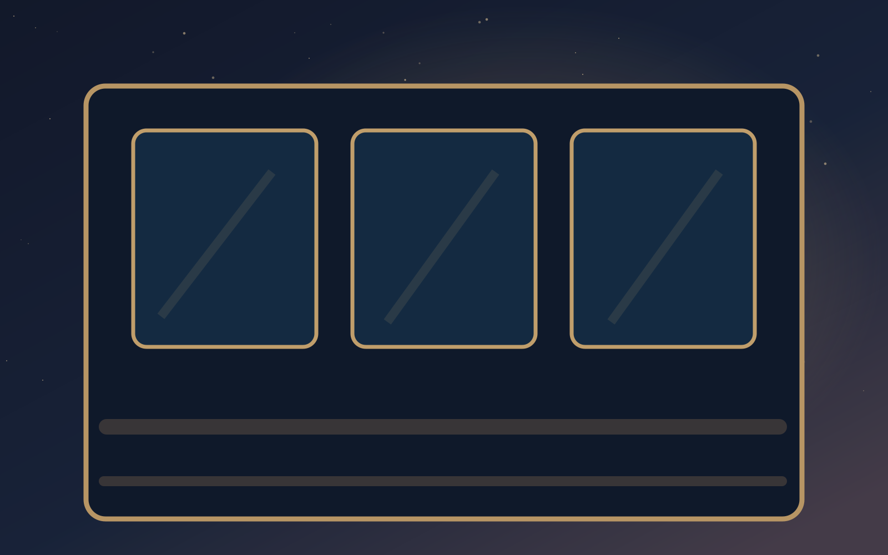

CHAPITRE I - VOIE 1 · LE TRAIN
Le wagon sans reflet

Le wagon est éclairé par de petites lampes couleur miel. Pourtant, ton visage n’apparaît pas dans les vitres : à sa place, tu aperçois un matin que tu ne reconnais pas. Une voyageuse en manteau bleu tient un carnet fermé. Au fond, la cabine du conducteur clignote comme un phare.
Une voix dans le haut-parleur chuchote : « À bord, les souvenirs voyagent sans leurs propriétaires. »